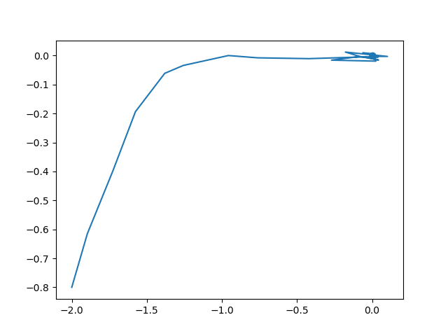
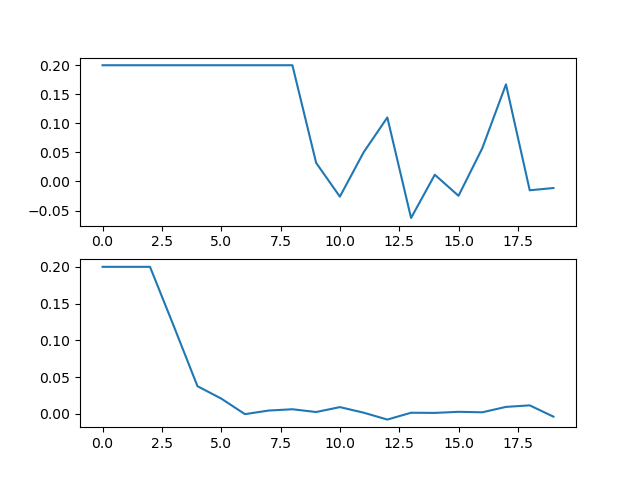

Model Predictive Control Regulation¶
Consider a simple Model Predictive Control (MPC)-based regulator for a 2-D linear system with additive process noise \(x[t+1] = Ax[t] + Bu[t] + \mathbf{w}[t]\). A certainty equivalence MPC regulator with horizon \(N\) is given by:
The expected value in the objective is given by \(\mathbb{E}[x[\tau]^T Q x[\tau]] = Tr(Q \text{Cov}(x_\tau)) + \mathbb{E}(x_\tau)^T Q \mathbb{E}(x_\tau)\).
If we wanted to incorporate chance constraints on the state, we might consider:
where \(a \in \mathbb{R^n}, \ b \in \mathbb{R}\).
The state itself is a random variable with mean \(\mathbb{E}(x)\) and covariance \(\text{Cov}(x)\) which are found by recursively applying the dynamics starting with \(x_0\) being a deterministic value and \(w\) being a random variable with mean \(\overline{w}\) and covariance \(\Sigma_w\)
Example¶
In the following code, we solve the MPC problem with state chance constraints assuming that the noise \(w\) (and hence the state) follows a Gaussian random variable.
import cvxpy as cp
import numpy as np
import matplotlib.pyplot as plt
from cvxRiskOpt.cclp_risk_opt import cclp_gauss
from cvxRiskOpt.mpc_helpers import lin_mpc_expect_xQx
T = 7 # horizon
A, B = np.eye(2), np.eye(2) # dynamics
# dynamics (nominal with 0-mean noise)
dyn = lambda x, u: A @ x + B @ u
# noise info
w_mean = np.array([0, 0])
w_cov = np.diag([0.1, 0.01])
# initial state
x0_mean = np.array([-2, -0.8])
# LQ objective cost matrices
Q = np.diag([1, 1])
R = np.diag([1, 1])
# params and vars
x0 = cp.Parameter(2, 'x0')
ctrl = cp.Variable((2, T), 'ctrl')
state = cp.Variable((2, T + 1), 'state')
# sim settings
steps = 20
current_state = x0_mean
# plotting results
x_hist = [current_state]
u_hist = []
t_hist = []
# objective function definition
obj = 0
for t in range(T):
v, _ = lin_mpc_expect_xQx(t + 1, T, A, B, ctrl, Q, x0, w_cov=w_cov) # compute the E(x^T Q x) term
obj += v
obj += cp.quad_form(ctrl[:, t], R)
# typical MPC constraints (initial state, dynamics, and input bounds)
constr = [state[:, 0] == x0]
for t in range(T):
constr += [state[:, t + 1] == dyn(state[:, t], ctrl[:, t])]
constr += [ctrl <= np.expand_dims(np.array([0.2, 0.2]), axis=1),
ctrl >= np.expand_dims(np.array([-0.2, -0.2]), axis=1)]
# state chance constraints encoded using cvxRiskOpt
sig = w_cov
for t in range(T):
for tt in range(t):
sig = A @ sig @ A.T + w_cov
constr += [cclp_gauss(eps=0.05,
a=np.array([0, 1]),
b=-1,
xi1_hat=state[:, t + 1],
gam11=sig
)]
constr += [cclp_gauss(eps=0.05,
a=np.array([0, -1]),
b=-1,
xi1_hat=state[:, t + 1],
gam11=sig
)]
prob = cp.Problem(cp.Minimize(obj), constr)
for t in range(steps):
x0.value = current_state
prob.solve(solver=cp.CLARABEL)
print(prob.status)
u_now = ctrl.value[:, 0]
w_now = np.hstack([np.random.normal(w_mean[0], w_cov[0, 0], 1),
np.random.normal(w_mean[1], w_cov[1, 1], 1)])
next_state = dyn(current_state, u_now) + w_now
x_hist.append(next_state)
current_state = next_state
print(current_state)
u_hist.append(ctrl.value[:, 0])
x_hist = np.array(x_hist)
u_hist = np.array(u_hist)
plt.plot(x_hist[:, 0], x_hist[:, 1])
plt.scatter(0, 0)
plt.show()
fig, axs = plt.subplots(2)
axs[0].plot(range(steps), u_hist[:, 0])
axs[1].plot(range(steps), u_hist[:, 1])
plt.show()
The resulting trajectory (being regulated to \([0,\ 0]\) is:
{kind=link}
The control inputs are shown below:
{kind=link}